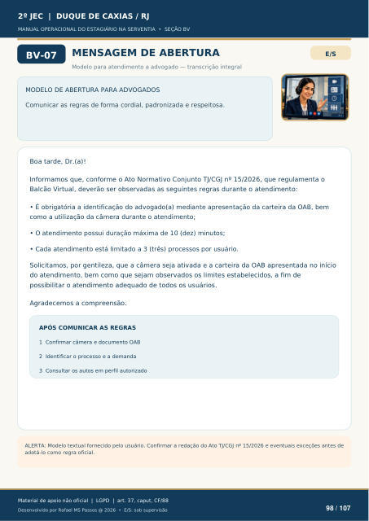

MENSAGEM DE ABERTURA
Modelo para atendimento a advogado — transcrição integral
MODELO DE ABERTURA PARA ADVOGADOS
Comunicar as regras de forma cordial, padronizada e respeitosa. Boa tarde, Dr.(a)! Informamos que, conforme o Ato Normativo Conjunto TJ/CGJ nº 15/2026, que regulamenta o Balcão Virtual, deverão ser observadas as seguintes regras durante o atendimento:
É obrigatória a identificação do advogado(a) mediante apresentação da carteira da OAB, bem
como a utilização da câmera durante o atendimento;
O atendimento possui duração máxima de 10 (dez) minutos;
Cada atendimento está limitado a 3 (três) processos por usuário.
Solicitamos, por gentileza, que a câmera seja ativada e a carteira da OAB apresentada no início do atendimento, bem como que sejam observados os limites estabelecidos, a fim de possibilitar o atendimento adequado de todos os usuários.
Agradecemos a compreensão.
APÓS COMUNICAR AS REGRAS
1 Confirmar câmera e documento OAB 2 Identificar o processo e a demanda 3 Consultar os autos em perfil autorizado ALERTA: Modelo textual fornecido pelo usuário. Confirmar a redação do Ato TJ/CGJ nº 15/2026 e eventuais exceções antes de
adotá-lo como regra oficial.
Ver também o infográfico original (página 98)
